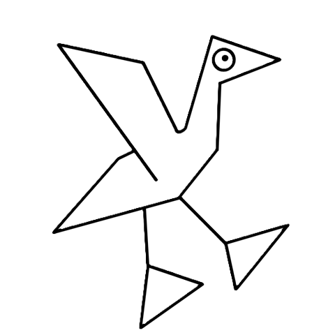

Referee controller
Pair the ref's phone or tablet
- Connect the phone or tablet to the same Wi-Fi as this server.
- Open the Camera app and scan this code.
This server isn't on a network yet. Join Wi-Fi, then reopen this window.
Using the home-screen app? Open it and enter this PIN
Ref page address
- For a full-screen app: in Safari tap Share ▸ Add to Home Screen; in Chrome tap ⋮ ▸ Add to Home screen.
- Turn off Auto-Lock (screen timeout) on the device during the event.
- Any other screen, such as a smart TV browser, can show the audience display at